ArcPet renderer samples
Generated by contracts/script/RenderSamples.s.sol
blob-egg.svg (647 B)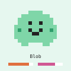
blob-happy.svg (896 B)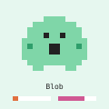
blob-hungry.svg (883 B)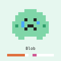
blob-sad.svg (958 B)blob-tomb.svg (771 B)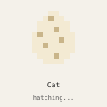
cat-egg.svg (646 B)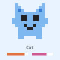
cat-happy.svg (975 B)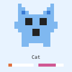
cat-hungry.svg (962 B)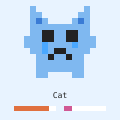
cat-sad.svg (1037 B)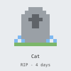
cat-tomb.svg (770 B)bird-egg.svg (647 B)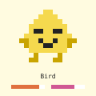
bird-happy.svg (990 B)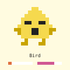
bird-hungry.svg (977 B)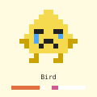
bird-sad.svg (1052 B)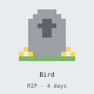
bird-tomb.svg (771 B)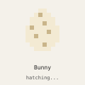
bunny-egg.svg (648 B)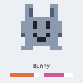
bunny-happy.svg (1010 B)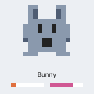
bunny-hungry.svg (997 B)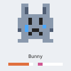
bunny-sad.svg (1072 B)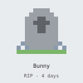
bunny-tomb.svg (772 B)eyes-0.svg (895 B)eyes-1.svg (919 B)eyes-2.svg (896 B)eyes-3.svg (920 B)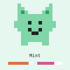
palette-0.svg (952 B)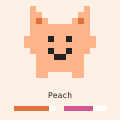
palette-1.svg (953 B)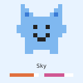
palette-2.svg (951 B)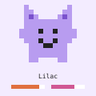
palette-3.svg (953 B)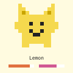
palette-4.svg (953 B)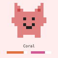
palette-5.svg (953 B)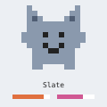
palette-6.svg (953 B)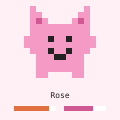
palette-7.svg (952 B)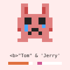
hostile-name.svg (1113 B)